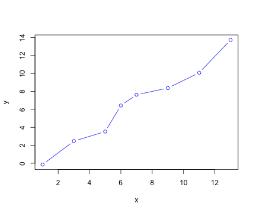

using Plots
f(x) = x^3 + 2x^2 - 7x + 35
plot(f)About
This is an experimental site generated by Darren Irwin on 16 May 2023.
Quarto can be used to write formatted text along with snippets of runnable code from Julia (or Python, R, etc.).
Some Julia code:
You can even run R from Julia:
using RCall
R"""
x <- c(1, 3, 5, 6, 7, 9, 11, 13)
y <- x + rnorm(length(x))
plot(x, y, type = "b", col = "blue")
y
"""
RObject{RealSxp}
[1] 1.545150 3.424166 6.457199 5.990399 6.052035 9.332789 11.627656
[8] 12.358898